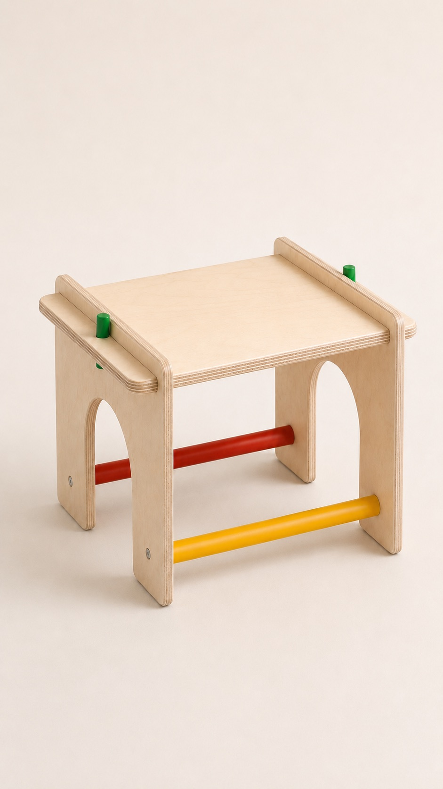
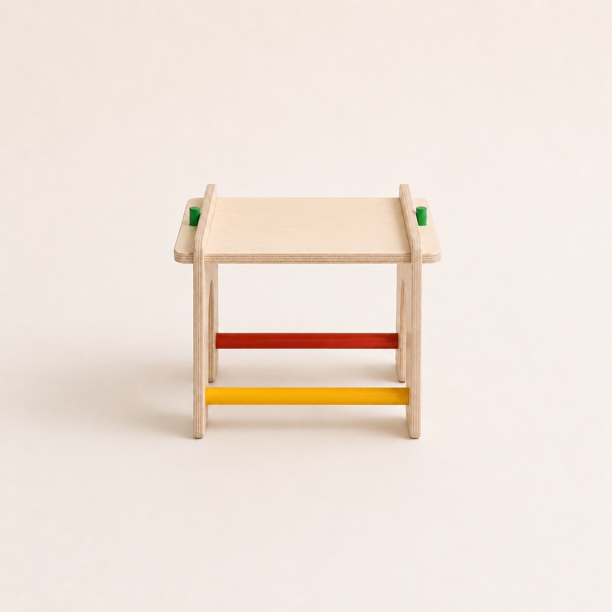
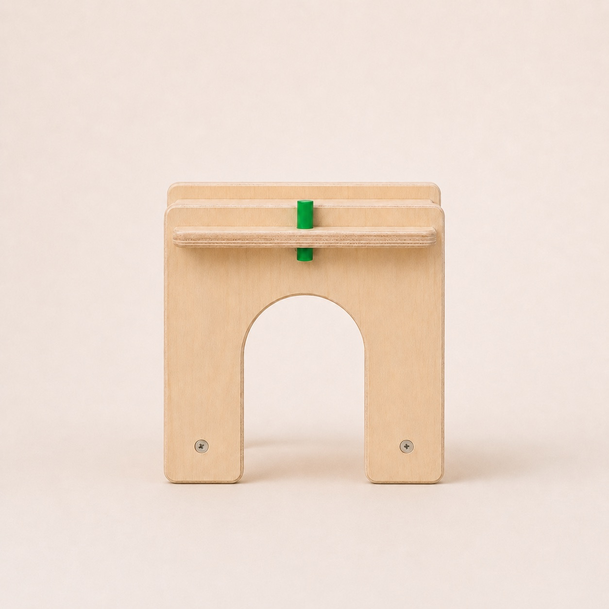
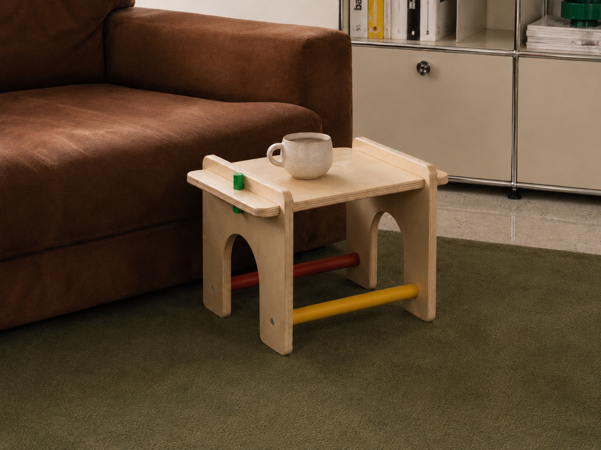
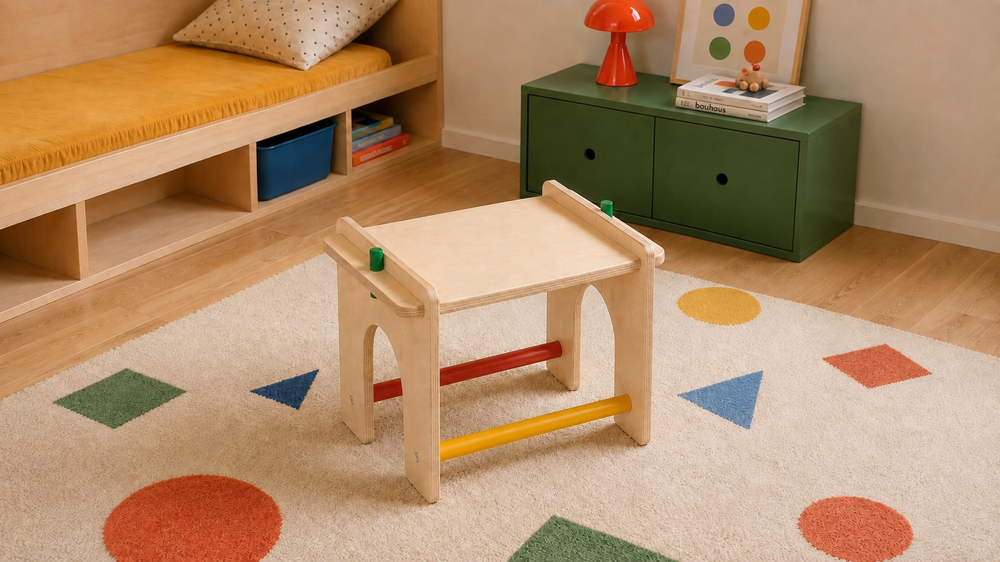
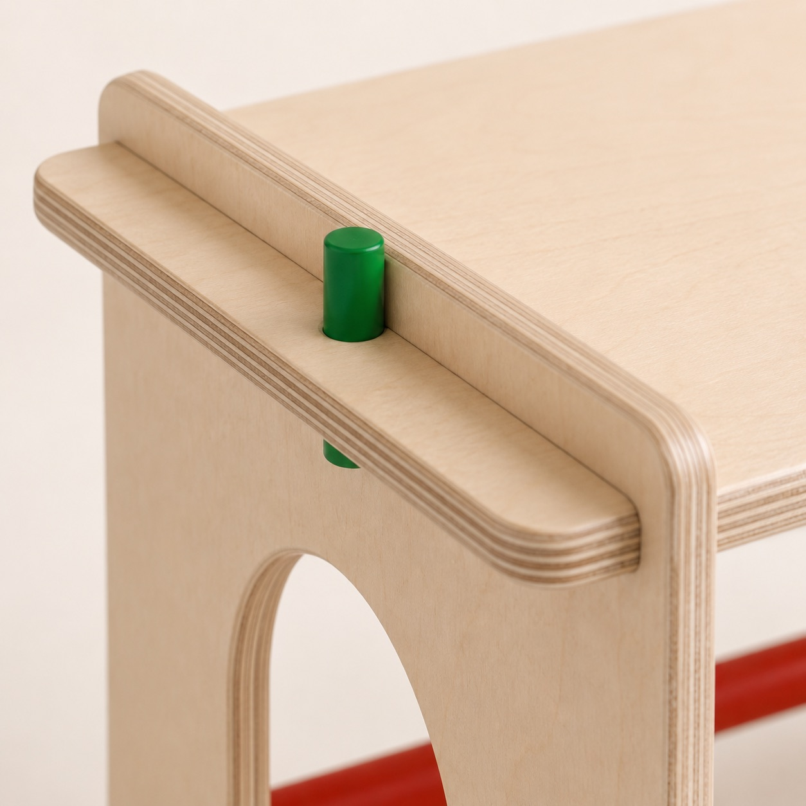
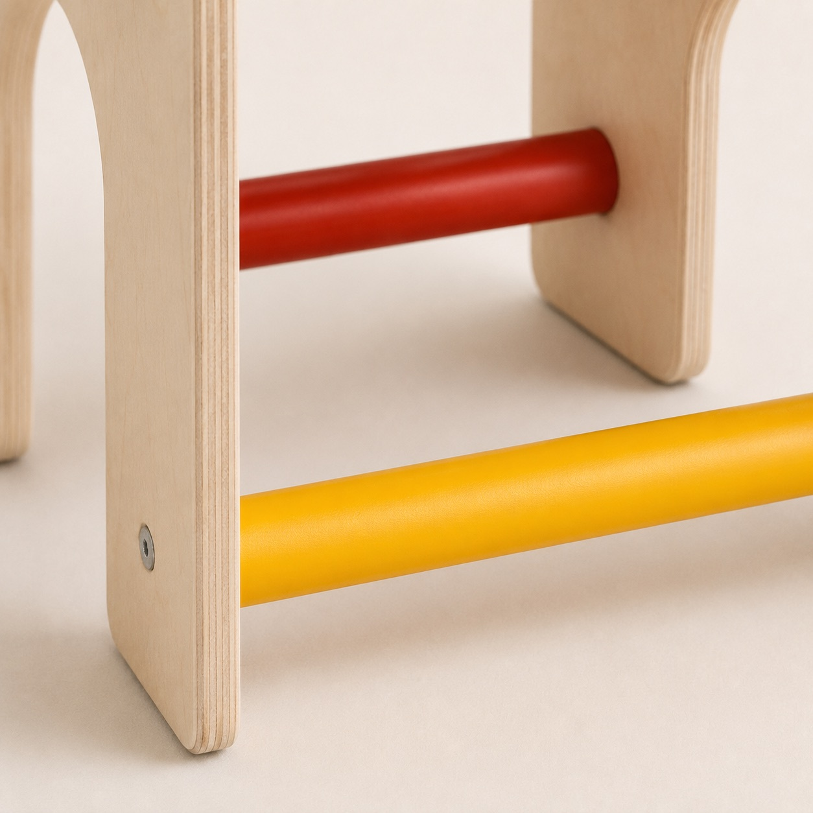

Arch Stool
Tabouret & table d'appoint — contreplaqué de bouleau
Trois pièces, deux tenons, deux traverses, 4 vis. Conçu pour les adultes et les enfants dès 5 ans.
Première édition en préparation.
Découvrir


Le Montage
Pas de notice de 40 pages.
L'assemblage a été pensé comme un jeu de construction : chaque pièce ne peut aller qu'à sa place.
Montage simple rapide & intuitif
- 3 pièces principales : une assise & deux pieds
- 4 pièces secondaires : deux tenons & deux traverses
- Une clé Allen, 4 vis, et c'est fini.
- Peut être assemblé par un enfant, dès 5 ans.
Multi usage
Choisissez-en l'usage. Pour un enfant, c'est un tabouret, une table, un établi. Pour les plus grands, c'est une table d'appoint à côté du canapé ou l'assise qu'il manque quand il y a trop d'invités.




Spécifications
- Structure
- Contreplaqué de bouleau 18 mm, chants apparents
- Traverses
- Hêtre massif laqué rouge et jaune. Tenons verts.
- Visserie
- 4 vis, une clé allen
- Dimensions
- L 420 × P 320 × H 300 mm*
- Finitions
- Vernis mat & peinture laquée pour les tenons et traverses
* Valeurs prototype — à confirmer sur la première édition.
Suivre le projetPremière édition — En cours
Le projet
avance.
Prototype en test. Suivez les étapes sur Instagram, ou regardez qui est derrière le projet.